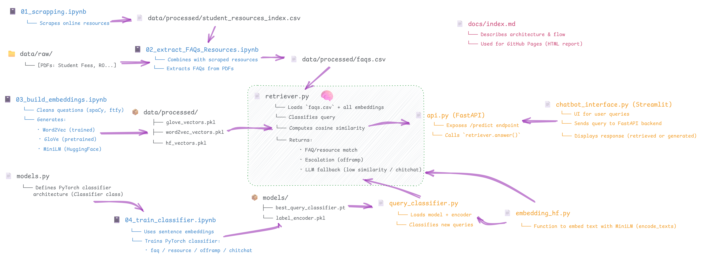

🤖 AI Student Support Chatbot: Proof of Concept
This repository presents a Proof of Concept (PoC) for a chatbot designed to reduce the workload of Student Success Advisors by answering frequent student queries using NLP, semantic search, and predictive classification.
👥 Team 7:
- Paula Ramirez (8963215)
- Babandeep (9001552)
- Hasyashri Bhatt (9028501)
🧱 System Architecture
This diagram shows the complete pipeline used in our Proof of Concept:
- Data ingestion and preprocessing from PDFs and web scraping
- Embedding generation using GloVe, Word2Vec, and HuggingFace
- Query classification and semantic similarity search
- Fallback logic using a generative LLM

Source: resources/Architecture.png
📁 Project Structure
Self-Service_Portal_Final_Project/
├── data/
│ ├── raw/ # Original input data (PDFs, CSV)
│ └── processed/ # Cleaned CSVs and vector pickles
├── models/ # Trained classifier, Label Encoder
├── notebooks/ # Jupyter notebooks for end-to-end pipeline for building the chatbot's backend.
│ ├── 01_scrapping.ipynb
│ ├── 02_extract_FAQs_Resources.ipynb
│ ├── 03_build_embeddings.ipynb
│ └── 04_train_classifier.ipynb
├── resources/ # Architecture diagrams and submission instructions
├── src/ # All backend source code
│ ├── api.py # FastAPI app for query prediction
│ ├── chatbot_interface.py # Streamlit frontend
│ ├── retriever.py # Embedding search, classifier + LLM fallback
│ ├── query_classifier.py # PyTorch classifier for query type
│ ├── embedding_hf.py # SentenceTransformer encoder
│ ├── models.py # Classifier architecture (torch.nn)
│ ├── openai_utils.py # (Optional) support for OpenAI APIs
│ └── test.py # Unit testing logic
├── docs/ # GitHub Pages static site
│ ├── index.html # HTML report for project presentation
│ └── assets/ # Screenshots used in HTML
├── requirements.txt # Python dependencies
└── README.md # Project overview
🧩 End-to-End File Dependency Flow
This diagram shows how the entire codebase is connected — from data ingestion to query prediction and chatbot interaction.

Source: Modules.png
🧠 NLP Pipeline
- Text normalization:
ftfy, unicodedata, re (used only for Word2Vec and GloVe)
- Lemmatization & tokenization:
spaCy (only used for Word2Vec and GloVe)
- Vectorization:
- Word2Vec: Trained on local FAQs and student resources
- GloVe: Pretrained (100d) from Stanford
- HuggingFace Sentence Transformers:
all-MiniLM-L6-v2 – used as final model due to superior semantic precision
- Query classification:
faq, resource, chitchat, offramp (via PyTorch classifier)
📚 Corpus Construction
- FAQs from Winter 2024 PDF documents
- Scraped resources from Student Success Portal
- Unified index with sentence embeddings
🔍 Retrieval Logic (Retriever)
This is the brain of the chatbot system, implemented in src/retriever.py:
- Receives a student query and classifies it as
faq, resource, chitchat, or offramp
- Encodes the query into a vector using the selected embedding model (Word2Vec, GloVe, or HuggingFace)
- Compares the query vector with all document vectors using cosine similarity
- If the similarity is high (> 0.8), returns the matched FAQ or resource directly (even for
chitchat)
- If similarity is too low or if the query is
chitchat/offramp, falls back to an LLM response or human advisor escalation
💬 Demo Features
Ask questions like:
- "Hi my name is Paula"
- "How can I pay my fees?"
- "I need help creating my CV"
- "My student status will expire"
- "I need a human advisor, I am tired!"
🤖 Models Used
- Word2Vec: Trained on internal FAQs + resources
- GloVe: Pre-trained (100d) from Stanford
- HuggingFace:
all-MiniLM-L6-v2 – used for semantic sentence embeddings
- PyTorch Classifier: Predicts query type (
faq, resource, chitchat, offramp)
- DistilGPT2: LLM fallback for chitchat and low-confidence queries
🛠 To Do / Future Work
- Override
chitchat classification if similarity is very high (e.g., > 0.85)
- Enable user feedback to flag irrelevant or incorrect answers
- OpenAI API Integration – Use GPT-based models for more natural, conversational responses (currently integrated via fallback)
- Multilingual Support – Add language detection and translation to support international students
- Multi-Embedding Support – Combine transformer embeddings (HuggingFace) with GloVe or Word2Vec for better retrieval performance
🚀 How to Run the Application
1. Activate your virtual environment (PowerShell):
Set-ExecutionPolicy -ExecutionPolicy RemoteSigned -Scope Process
.�env\Scripts�ctivate
2. Run the FastAPI backend:
uvicorn src.api:app --reload
3. Launch the Streamlit chatbot interface:
streamlit run src/chatbot_interface.py --server.port 8501
🔗 Project Links